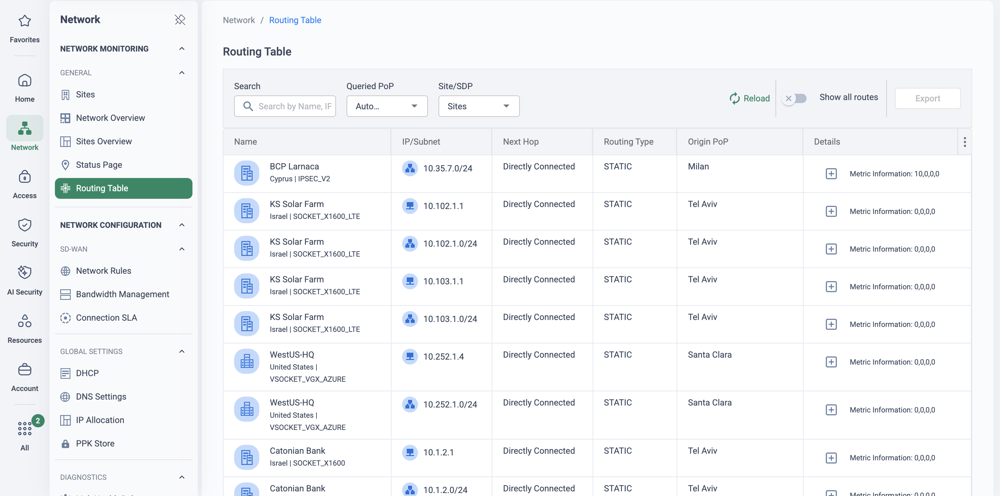
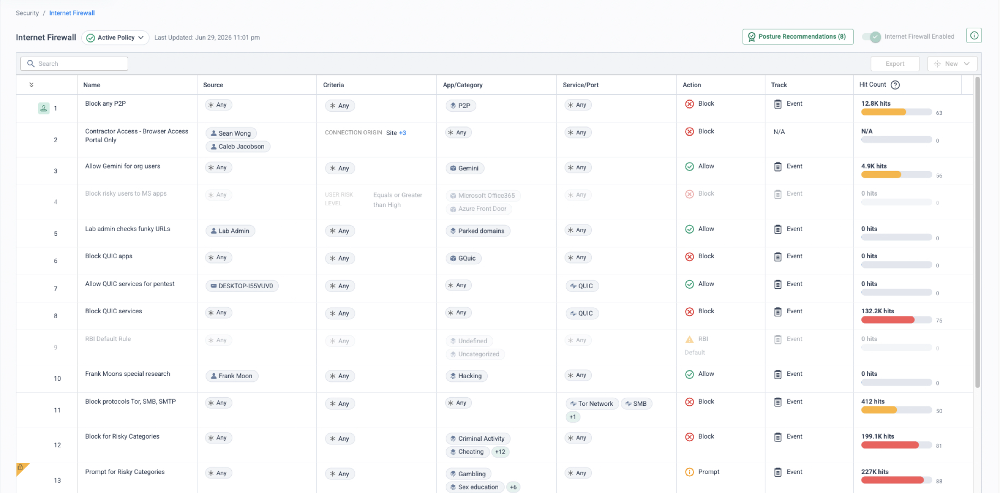
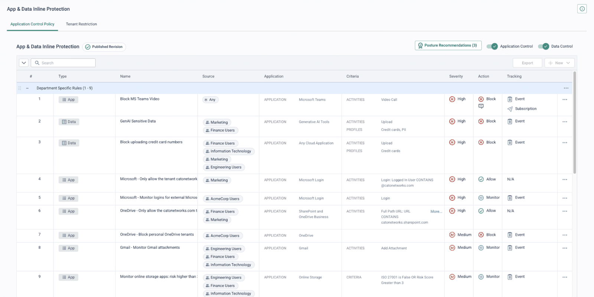
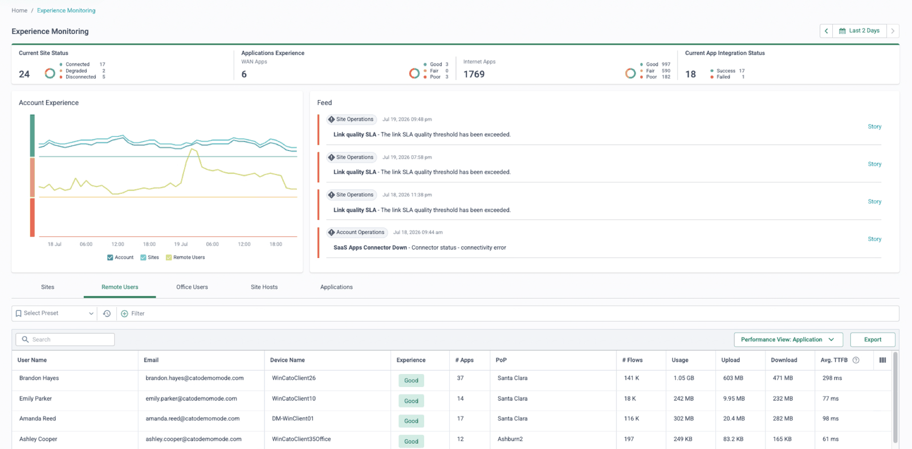

Two decision points: who runs the head-end, and who owns the contract
Versa's architecture is honest about where the work lives. VOS on a CSG appliance, certified white box or VM is the branch edge — SD-WAN routing plus an on-box NGFW/UTM stack. Behind the edges sits real server infrastructure: Versa Director (management, templates, workflows) in active-standby pairs, Versa Controller — a multi-instance MP-BGP route reflector distributing routes and IPsec security associations to every branch — in active-active pairs, a Versa Analytics cluster, and often Concerto as the orchestration portal on top. All components must run the same Versa software version, so upgrades are coordinated fleet events; the published requirements list Ubuntu 18.04 as the supported base OS for on-premises head-ends. Versa now sells a hosted-and-managed head-end service (VHM) — tacit acknowledgement that this is a burden many customers do not want.
The second decision point is commercial. Versa sells heavily through service providers — Verizon's managed SD-Branch and Lumen's SD-WAN and SASE services are built on Versa — and in those estates the provider owns the Director tenancy, often the CPE and sometimes the underlay circuits. The enterprise raises change tickets rather than making changes, and the network architecture is bound to the carrier contract term. Contract renewal, a dissatisfaction window, or Versa's own VersaONE re-platforming conversation (announced November 2024) are the natural moments to evaluate an alternative.
The objective of this migration: Sockets on the WAN edge, the global private backbone as the middle mile, single-pass inspection at the PoP, and one console — the Cato Management Application — with no head-end anywhere in the customer's or provider's estate. The control plane, the analytics store and the patching cycle become the vendor's problem, permanently.
The head-end burden, in Versa's own numbers
These figures are from Versa's published head-end hardware and software requirements — the sizing for a 2,500-CPE / 500-tenant estate, deployed across Tier 3/4 data centres or cloud availability zones for geo-redundancy:
The security record matters here not as FUD but as evidence of what self- or provider-hosted management infrastructure costs. State the facts accurately — patches exist for everything below — and let the operating model make the argument:
Director zero-day 2024
CVE-2024-39717, a file-upload flaw in Director's GUI, was exploited as a zero-day from at least June 2024 and added to the CISA KEV catalogue in August 2024. Black Lotus Labs attributed the campaign with moderate confidence to Volt Typhoon, which planted the in-memory “VersaMem” web shell on Director servers to harvest credentials — with victims in the ISP, MSP and IT sectors: the providers running Director for downstream enterprises. Fixed in Director 22.1.4+.
Concerto disclosures 2025
In May 2025, after a 90-day disclosure window, ProjectDiscovery published three Concerto vulnerabilities: CVE-2025-34027 (CVSS 10.0 — authentication bypass to file upload and RCE), CVE-2025-34026 (CVSS 9.2 — reverse-proxy Actuator bypass exposing heap dumps and session tokens) and CVE-2025-34025 (privileged container escape). Hotfixes shipped on 7 March 2025 and Versa states a remediated release followed on 16 April 2025. The exposure was not theoretical: CISA added CVE-2025-34026 to its KEV catalogue on 22 January 2026.
The provider-delivered model
Where the SD-WAN is carrier-managed (Verizon, Lumen and others), the enterprise typically cannot touch Director at all: config exports, policy changes and spoke operations all go through provider change tickets on provider timescales — and the patch cadence for the head-end components above is the provider's, not the customer's, decision. Cato has publicly positioned for enterprises opting out of carrier SD-WAN.
“Who patched your Director, Controller, Analytics and Concerto in August 2024 and April 2025 — you, your carrier or Versa — and how long did it take? And if you asked for a full config export today, is that a console click or a change ticket with a lead time?”
Component-by-component mapping
The conversion is intent recovery, not lift-and-shift: Versa's template layers exist to keep hundreds of VOS instances consistent, and that whole problem class disappears when policy is expressed once in a cloud rulebase. What remains — site onboarding, policy-as-code — maps to the Cato GraphQL API and Terraform provider.
| Versa component | Cato equivalent | Migration note |
|---|---|---|
| VOS on CSG appliance / white box / VM (branch edge) | Cato Socket (vSocket in AWS/Azure) | The Socket is a thin edge — tunnels, path selection, QoS, LAN firewall. Deep inspection moves to the PoP; no per-site security sizing. |
| Versa Director (templates, workflows, device management) | Cato Management Application (CMA) | Nothing for the customer or provider to host, patch or upgrade; automation via the GraphQL API and the catonetworks/cato Terraform provider. |
| Versa Controller (multi-instance MP-BGP route reflector + IPsec SA distribution) | Cato PoPs and backbone — the control plane is part of the service | No customer-operated route reflectors; Sockets connect to the nearest PoP and any-to-any routing is a property of the backbone. |
| Versa Concerto (orchestration portal) | CMA — same single console | No separate orchestration tier to deploy or patch (cf. the 2025 Concerto CVEs). |
| Versa Analytics cluster | CMA events and analytics, XDR storyboards, SIEM integrations | No cluster sizing per 2,500 CPEs; events are generated once, in the cloud. |
| Versa Secure SD-WAN overlay (Controller-distributed IPsec SAs, branch-to-branch) | Socket tunnels to the nearest PoP + global private backbone | No SA mesh to operate. Network rules with bandwidth profiles recreate steering intent; per-link last-mile monitoring is built in. |
| VOS UTM stack (NGFW, IPS, AV, URL filtering on the box) | Cato single-pass inspection at the PoP (SPACE): WAN/Internet Firewall, IPS, NGAM, SWG | One cloud-global rulebase replaces per-template security policy; inspection capacity is the platform's problem. |
| Versa Secure Access Client (VSAC) + Cloud Gateways + VSPA | Cato Client (SDP) with Device Posture and Client Connectivity Policy | The same PoP-delivered stack that serves sites — one policy for users and sites. |
| Versa Titan (cloud-managed tier) | CMA — the only tier; every customer gets the full console | Titan estates have no head-end to migrate — mostly a CPE swap and policy re-model, but see the gotchas below. |
| uCPE / service-chained third-party VNFs on CSG | No direct equivalent — disposition per function | Absorb into Cato (firewall, SWG…), retain a dedicated appliance, or re-platform. Must be inventoried in discovery. |
| Director multi-tenancy (SP tenants, white label) | Policy scoping within one CMA account; separate accounts for hard tenancy | The enterprise leaves the provider's tenant entirely — history and exports need provider cooperation. |
| Paired CSG HA at a site | Socket HA (primary/secondary) + PoP- and backbone-level resilience | The site survives socket, link and PoP failures independently. |
Five phases from Director-managed to one platform
This page is authored from vendor documentation and Cato PS methodology research; it is not a delivery-verified runbook. Review the design — especially the eBGP handoff, filtering and rollback details, and anything contract-dependent — with Cato Professional Services before committing it to a customer plan.
The arc follows the Cato PS four-phase methodology (Discover & Design → Pilot, Build & Initial Rollout → Advanced Security & Broader Rollout → Tune, Optimise & Handover; the reference plan is four months), with co-existence broken out below because it is the load-bearing step in a Versa estate.
-
Phase 1 — Discover & design: start the Director export early
Export per-appliance configuration from Director (Appliances → Export Configuration, or
show configuration | display setfrom the VOS CLI) and the staging/post-staging and device templates that generate branch config. Pull Analytics traffic data to build the real traffic matrix — Controller-distributed branch-to-branch IPsec SAs mean spoke-to-spoke flows rarely appear in design documents. In carrier-managed estates, raise the export request in week one: config, templates and Analytics data all arrive via the provider's change process, with lead time — and capture what the contract obliges the provider to hand over. In parallel, inventory contract end dates, notice periods, early-exit terms and which assets (CPE, circuits) are provider-owned.Clean the rule base before translating it: retire dead rules using Analytics hit data, collapse duplicate objects, flag any-any debt. Classify the estate — regional VOS hubs, DCs, branch classes (paired-CSG HA vs single, LTE backup), tenants, inbound NAT/published services, uCPE sites hosting VNFs, Titan vs Director-managed populations. Then fix the co-existence design: eBGP hub handoff pattern, AS numbering (the Cato side is eBGP-only; default Cato ASN 64515), route filtering and summarisation, and a cutover template per site class. Stand up the foundation: CMA baseline, IdP/SCIM, Client packaging and TLS-inspection certificates, socket logistics, SIEM planning.
-
Phase 2 — Co-existence: parallel Sockets at the Versa hubs (PS Option F)
Network → Sites
Stand up Sockets (or vSockets) at the data centres and at each Versa hub/gateway site, alongside the existing kit; establish eBGP handoffs into each hub's LAN-side routing, and validate route exchange, symmetry and failover before any branch moves. Path symmetry is maintained by AS-path length: cross-region routes carry an extra inter-hub AS hop, so best-path selection anchors traffic to the local regional hub — exiting and returning through the same stateful VOS firewall. The Versa overlay's MP-BGP world stays intact and segmented on its side of the handoff; the two domains meet only at eBGP. Filter the default route and the prefixes of any half-migrated site at every handoff, and use BGP summaries and Cato's BGP filtering to keep the exchange tidy.
-
Phase 3 — Pilot branch and pilot cohort, monitor-then-block
Security → Internet Firewall
Convert security policy from the cleaned rule base: WAN Firewall for site-to-site, the Internet Firewall wizard for the initial egress policy, IPS and NGAM in monitor mode first, and network rules with bandwidth profiles recreating Versa's steering intent (voice, business-critical, bulk). Cut over one representative branch with the chosen pattern and soak it. Deploy the Cato Client to a pilot cohort — Client Connectivity Policy in monitor mode first — and validate access, performance and UX. Keep one VPN/ZTNA data path active per endpoint during the overlap; rollback for the pilot is the standard spoke rollback below. Promote monitor rules to block only on evidence from real events.
-
Phase 4 — Regional waves, sequenced with the provider
Access → Client Connectivity Policy
Migrate branches region by region behind their regional hub handoff: simple single-WAN branches first, then HA branches, then complex sites (uCPE/VNF hosts, local inbound services), hubs last. In provider-managed estates every wave's spoke-disable is a provider change ticket with a pre-agreed rollback window — the provider is in the loop for every cutover. Users follow as VSAC → Cato Client cohorts (the PS reference plan uses four waves): disable VSAC connectivity per cohort, enable the Cato Client, re-model access as ZTNA policy with Device Posture profiles. Enable TLS inspection in phases by URL category and pilot group. Keep provider circuits alive until the sites they serve are validated on Cato — and where the last mile is bundled with the managed SD-WAN, re-procure internet access per site ahead of its wave, because circuit delivery, not configuration, is usually the true critical path.
-
Phase 5 — Optimise, decommission, and exit the contract cleanly
Monitor → Events
Tune QoS and policy from analytics, complete final site and user migrations, and bring the SIEM integration live. Then decommission in order: remove eBGP handoffs as each region completes → retire the VOS hubs → decommission the head-end (Director, Controller, Analytics, Concerto servers/VMs) once logging-retention obligations are met — having run CMA analytics in parallel since the pilot so trending exists before the Analytics cluster goes dark. Finally, return provider-owned CPE and serve contract notice per the terms mapped in Phase 1, and close with documentation, admin training and operational handover.
Two overlays, one eBGP seam
Asymmetry is the enemy. With two overlays joined in more than one place, a flow can exit through one region's hub and return through another — breaking stateful inspection on the VOS firewalls. The PS multi-region pattern (Option F, demonstrated against a FortiGate estate and applied unchanged here — the legacy hub only needs to speak eBGP) puts a parallel Socket at each Versa hub with an eBGP handoff, and lets AS-path length anchor each region's traffic to its local hub. Spoke migration is then a routing event: 1) disable the Versa spoke (via Director, or a provider change ticket) so its prefixes are withdrawn from the overlay and the eBGP exchange; 2) bring up the Cato socket site; 3) routes propagate automatically to both domains; 4) rollback is the mirror image — down the socket site, re-enable the Versa spoke, and BGP reconverges.
Symmetric by construction
AS-path anchoring makes each side prefer its local regional hub — no cross-region return paths through a different stateful VOS firewall.
Reversible per spoke
Disable the Versa spoke and its prefixes withdraw from both domains automatically; re-enable it and BGP reconverges. No per-site route engineering.
The overlay is left intact
The Controller-distributed MP-BGP world keeps running, segmented on its side of the handoff — un-migrated branches never notice the migration.
Provider-friendly seams
Where the provider owns the CPE, the L3-switch and socket-as-default-gateway patterns keep every change on customer-controlled equipment.
Branch-level patterns (pick per site class)
| Pattern | Default gateway | Mechanics | Rollback |
|---|---|---|---|
| VOS CPE stays DG, static routes | VOS CPE | Socket on a LAN transit; CPE routes migrated subnets to the Socket | Remove the statics — traffic reverts to the overlay instantly |
| VOS CPE stays DG, eBGP over LAN transit | VOS CPE | eBGP Socket ↔ CPE (LAN-side routing instance); phased subnet migration | Withdraw advertisements or drop the peering |
| L3 switch decides | L3 switch | Core switch routes between legacy and Cato-migrated subnets | Flip routes on the switch |
| Socket as DG, eBGP LAN handoff | Cato Socket | Socket is the gateway; eBGP handoff for legacy prefixes; full Socket HA | Re-point the DG to the VOS CPE |
| Socket as DG, Alt-WAN BGP / Gradual Deployment | Cato Socket | Legacy overlay reached via Alt-WAN with eBGP, or unknown RFC1918 routed via Alt-WAN | Routes revert via BGP — see caveats below |
Alt-WAN caveats: configure local routing so Alt-WAN-destined flows are not first carried to the PoP (avoiding asymmetry), and note that Alt-WAN failure does not trigger Socket HA failover — prefer BGP on a LAN handoff where HA matters. Gradual Deployment handles private (RFC1918) destinations only.
If the provider won't open BGP
Common in managed estates: no routing session into the provider's VOS world. The PS static alternative is an interconnect site with routed ranges — pre-stage real subnets on the interconnect and dummy ranges on the future Cato sites; at cutover delete the routed range and update the dummy range; rollback is re-adding the statics. Proven at scale in a ~300-site deployment.
Users and inbound services in transition
Run VSAC and the Cato Client side by side only in a controlled per-cohort overlap, with one VPN/ZTNA data path active at a time. Published/inbound services on VOS CPEs migrate deliberately — re-publish via Cato (remote port forwarding or static-IP egress) or leave them on a retained leg until their own change window.
What bites, and what they'll say
“Our whole branch config is generated from Director templates”
True — and it cuts both ways. The effective config of any branch is the product of workflows, staging and post-staging templates, device templates and per-device bind data. Treat migration as intent recovery: export the templates and per-appliance configs, identify what actually varies per site (the bind data), and express the common intent once in CMA's single rulebase. The automation that keeps hundreds of VOS instances consistent solves a problem class that disappears with one cloud rulebase; what remains maps to the GraphQL API and Terraform provider.
“The provider runs it — we can't even export the config”
Common in carrier-managed estates: the enterprise has a read-only portal, not Director admin. Mitigations: contractual data-handover clauses, provider change tickets for exports, and reconstruction from customer-side artefacts (LAN addressing, firewall change records, the Analytics reports the customer can see). Budget discovery time accordingly, sequence waves around provider SLAs — and agree Analytics retention and export format in Phase 1, because leaving the provider's tenant forfeits historical reporting unless it is exported first.
Service chaining and uCPE VNFs
CSG platforms can host third-party VNFs service-chained with VOS. Every chained function needs an explicit disposition: absorbed into Cato's PoP inspection, replaced by a dedicated device, or retained on separate hardware. Miss one in discovery and a branch cutover strands a function nobody documented — inventory uCPE sites explicitly in Phase 1 and validate their disposition in the pilot.
Titan estates are a different migration
Titan is Versa's cloud-managed lean-IT tier — no customer head-end, so the migration is lighter (CPE swap, policy re-model). But the config detail available for export is shallower, and the estate was chosen precisely because the customer is lean-IT: plan for Cato PS or partner-led delivery rather than customer self-service.
“Versa is single-pass and single-OS too”
Versa's single-pass claim applies to VOS on the appliance and to its cloud gateways — but the architecture still requires someone (customer, carrier or Versa) to host and operate Director, Controller, Analytics and Concerto, and VersaONE is explicitly offered self-managed, co-managed or fully managed. The counter is not the packet path but the operating model: one cloud service, one console, no head-end anywhere in the estate, and the vendor — not the customer — patches the platform.
“We'll just patch Director and stay”
Be accurate: fixes shipped (Director 22.1.4+; a remediated Concerto release in April 2025). But CVE-2024-39717 was exploited as a zero-day against the management plane itself, by an actor targeting the ISP/MSP layer that operates Director for downstream enterprises — and VersaMem harvested credentials in memory, so patching alone did not settle the incident-response question. The Concerto disclosures then hit the orchestration layer at CVSS 9.2–10.0, and CISA listed one of them (CVE-2025-34026) as exploited in the wild in January 2026. The pattern argument: every self- or provider-hosted management component is attack surface the customer inherits.
Niche VOS behaviours — bespoke NAT constructs, per-tenant routing instances, CGNAT, local-breakout exceptions, voice SLA-steering specifics — should be listed in discovery and validated in the PoV rather than assumed. Put them on the test plan by name.
How to prove it in the customer's tenant
The PoV is the migration plan in miniature: one Versa hub gets a parallel Socket and an eBGP handoff into its LAN-side routing, one branch cuts over behind it, one bounded slice of Director-generated policy is translated at parity, and — deliberately — a greenfield CASB/DLP build runs on the pilot cohort, because that is the capability the VOS estate has nothing to compare against. The MP-BGP overlay is left intact throughout, and rollback is demonstrated on purpose, timed, before anyone asks. Run it inside the frame from Running a Cato PoV: agree the success criteria below with the customer before anything is configured, and book the decision meeting at the same workshop. In carrier-managed estates, add the provider to the cast list on day one — several of the steps below are their change tickets, not yours.
Success criteria
| # | Criterion — what we demonstrate | Evidence artefact | Where it lives in the CMA |
|---|---|---|---|
| 1 | The eBGP handoff at the Versa hub is established and exchanging routes: overlay prefixes learned by Cato, Cato prefixes learned by the VOS hub | BGP neighbour state and learned routes on both sides — Show BGP Status in the CMA, captured beside the hub VR's neighbour state from Director's appliance monitoring (or the provider's portal) | Network → Sites → «hub-site» → Site Settings → BGP and Network → Routing Table |
| 2 | The pilot branch, cut to a Cato Socket, reaches un-migrated VOS sites via the hub handoff — and they reach it back | Bidirectional reachability tests; the branch prefix visible in the Versa overlay via the hub, and the overlay prefixes visible in Cato's routing table with AS path and received communities | Monitor → Topology and Network → Routing Table |
| 3 | A bounded Director policy slice — the pilot site's firewall rules plus one URL-filtering profile — runs at parity on Cato, monitor-first | Rule-hit events for each translated rule, compared against the Versa Analytics baseline for the same flows; deltas triaged and explained | Monitor → Events, Security → WAN Firewall, Security → Internet Firewall |
| 4 | Greenfield CASB and DLP produce evidence on the pilot cohort's real traffic — a scored shadow-IT inventory and monitor-mode DLP matches the Versa estate has never had | Cloud Apps discovery view with risk scores; DLP monitor-mode events attributed to user, app and data type on the Data Protection Dashboard | Monitor → Cloud Apps Dashboard and Monitor → Data Protection Dashboard |
| 5 | An experience baseline exists: the pilot site and cohort scored across a full working week | Experience Monitoring scores, TTFB and per-app views for the pilot site and users; no unresolved helpdesk tickets from the cohort | Monitor → Experience Monitoring |
| 6 | Rollback is real: the Versa spoke is re-enabled, the socket site taken down, and traffic reverts to the overlay — timed, then cut forward again | Timestamped routing tables before / during / after, and a continuous ping across the reversion showing convergence time | Network → Routing Table, plus the hub VR's routing table from Director or the provider |
- Two sockets shipped: one for the Versa hub (parallel, alongside the VOS kit), one for the pilot branch. Socket firmware matters: the community-32768 isolated-route behaviour needs Socket v15+, summary routes need v19+, and BGP filtering on socket sites needs v21.1+.
- A spare routed interface (or 802.1Q sub-interface) on the VOS hub's LAN-side virtual router, an agreed transit VLAN and /29 for the handoff, and private ASNs agreed — Cato's default is 64515 and Cato is eBGP-only, so the Versa side must use a different ASN.
- The Director export and the pilot site's Versa Analytics reports requested in week one — in carrier-managed estates both are provider change tickets with lead time, and the Analytics reports are the parity baseline for criterion 3.
- Trial licences for every capability under test — CASB/DLP for the greenfield build, and note that Experience Monitoring's DEM drill-downs need a DEM licence.
- IdP/SCIM sync live for the pilot cohort: group-scoped CASB and DLP rules have nothing to bind to without it.
- TLS inspection staged first for the cohort — CASB activity-level control and DLP content inspection both require it (see TLS Inspection: Staged Rollout Playbook), with certificates deployed in advance.
- Change windows booked up front for the branch cutover and the deliberate rollback drill — in provider-managed estates the spoke disable and re-enable are tickets, so both windows need the provider committed, not just informed.
Configuration walkthrough
-
Stand up the hub handoff — transit VLAN and eBGP
Network → Sites → «hub-site» → Site Settings → BGP
Cable the parallel socket's LAN port to the hub switch, carry the transit VLAN to the VOS hub's LAN-side virtual router, and create the BGP neighbour on the Cato site with the defaults unless design says otherwise — metric 100, hold time 60 s, keep-alive 20 s — and MD5 authentication on both ends (see Configuring BGP Neighbors for a Cato Socket). Advertise summary routes for the Cato side rather than the full table: Cato advertises only the summaries you define explicitly — it does not aggregate for you. The VOS side of the session is Director template work (or a provider ticket) — agree the worksheet below before the build window:
# eBGP handoff worksheet — one per hub, agreed before the build window transit VLAN 810 # spare routed port or 802.1Q sub-if on the VOS hub VR transit subnet 10.255.99.0/29 socket IP 10.255.99.1 # Cato side of the session VOS hub VR IP 10.255.99.2 # peer IP on the Cato neighbour Cato ASN 64515 # Cato default; Cato is eBGP-only VOS-side ASN 65020 # any private ASN, must differ from 64515 advertise (Cato) summary routes only — defined explicitly filter (inbound) drop 0.0.0.0/0 and any half-migrated site prefixes timers / auth hold 60 s · keep-alive 20 s · metric 100 · MD5
-
Filter the exchange before it can hurt anyone
Network → Sites → «hub-site» → Site Settings → BGP
On the neighbour's Policy section, add inbound BGP filtering — accept or drop lists matched on route or community: drop the default route and the prefixes of any site with parallel connectivity, so a half-migrated site is never reachable via two paths at once. Two behaviours to know: editing BGP filters resets the BGP session immediately (do it in the build window, not mid-test), and prefixes the VOS hub tags with the reserved community <Cato ASN>:32768 are installed only in the hub socket's local routing table and are not propagated to the PoP. This pilot needs the overlay prefixes account-wide — the pilot branch reaches them across the backbone — so they must not carry that community.
-
Validate routing on both sides — before anything moves
Network → Routing Table
Use Show BGP Status on the neighbour to confirm the session is Established and inspect learned routes, then open the account routing table: filter to the exchanged prefixes and check next hop, AS path and received communities for each. Mirror the check on the Versa side from Director's appliance monitoring — or, in a managed estate, ask the provider to evidence the hub VR's BGP state as part of the ticket. Advertise a test prefix first and watch it appear in both domains before any production subnet is at stake.
-
Cut the pilot branch to a Socket
Network → Sites Monitor → Topology
The standard spoke move from the co-existence section above: disable the branch's Versa spoke via Director (or the provider's ticket) so its prefixes are withdrawn from the MP-BGP overlay and, via the hub, from the eBGP exchange; bring up the Cato socket site; let routes propagate to both domains. Then prove criterion 2 both ways: from the migrated branch to a host behind an un-migrated VOS site, and from that legacy site back — traffic crossing the backbone to the hub socket, the eBGP handoff, and the Versa overlay beyond it.
-
Translate the policy slice — monitor first
Security → WAN Firewall Security → Internet Firewall
Keep the slice bounded: the pilot site's firewall rules plus one URL-filtering profile. Regenerate the branch's effective config first — template stack plus bind data, from the Director export — then rationalise on Analytics hit counts before translating; the full per-domain method, worked example included, is Versa Policy Migration. Every translated rule lands with Track = Event and block actions deferred; nothing blocks until CMA events prove the rule matches what its VOS ancestor matched.
-
Build CASB and DLP greenfield on the cohort — the differentiator
Security → CASB Security → DLP Configuration
There is nothing to translate — typical VOS estates carry no inline CASB and no DLP — so this step is a best-practice build, positioned as the upgrade it is. Let shadow-IT discovery run on the cohort's traffic in Monitor → Cloud Apps Dashboard, then write application control rules in monitor mode with activity-level control (upload, download, share) on the apps the business actually uses, and a Data Control policy on predefined data types — Cato ships more than 350 across 30+ countries and languages — scoped to the cohort. Both depend on the TLS inspection staged in the prerequisites. A fortnight of monitor-mode evidence here is the exhibit the incumbent cannot answer.
-
Baseline the experience
Monitor → Experience Monitoring
Let the pilot site and cohort work a normal week and capture the Experience Monitoring view weekly: per-site and per-user scores, TTFB and per-app drill-downs. This is criterion 5's evidence and the answer to “will it feel slower than the overlay?” — dated screenshots into the evidence doc, alongside anything Versa Analytics showed for the same site before cutover.
-
Demonstrate rollback — deliberately, timed, with the provider in the room
Network → Routing Table
In a change window, run the reversion as a rehearsed drill: take the socket site down, re-enable the Versa spoke (a Director action — in managed estates a pre-booked provider ticket), and keep a continuous ping running from a legacy site while BGP reconverges. Capture the routing table before, during and after, note the convergence time, then cut forward again the same way. This is the criterion that de-risks every later wave — the customer watches the overlay take the branch back in minutes, with no rebuild and no provider escalation.
What good output looks like




Troubleshooting
Session up, routes missing
Check received communities in Network → Routing Table: prefixes tagged <Cato ASN>:32768 stay local to the hub socket and never reach the PoP — remove the tag on the VOS side if the pilot needs them account-wide. Then check the neighbour's accept/drop lists, and remember every filter edit resets the BGP session.
Overlay still steering around the pilot
Traffic to the migrated branch takes the old overlay instead of the handoff: the spoke disable has not propagated, or steering policy on an un-migrated VOS site still prefers a stale path for the branch prefix. Confirm the withdrawal from Director's routing view (or make it an explicit check on the provider's ticket) before debugging anything on the Cato side.
Keep the parity comparison fair
VOS inspected only where a UTM profile was attached to a rule; Cato's single-pass engine inspects everything it sees — so new detections in monitor mode are coverage gained, not false positives, and the Analytics baseline only exists for flows a profile actually touched. Compare per category, with TLS inspection staged before judging web filtering beyond domain/SNI.
CASB or DLP shows nothing
Almost always a visibility prerequisite, not a policy fault: TLS inspection is not yet inspecting the cohort (check rule order and scope in Security → TLS Inspection), or the SCIM groups the rules are scoped to have not synced. Fix the prerequisite and the dashboards populate within hours.
Provider lead times eat the timeline
In carrier-managed estates the export, the spoke disable, the re-enable and the rollback drill are all provider tickets on provider SLAs. Raise the export in week one, pre-book both change windows at the scope workshop, and put the ticket references in the evidence doc — the lead time itself is evidence for the operating-model argument.
Asymmetry at the seam
During the pilot the branch prefix must be reachable through exactly one handoff. If a second hub already has a parallel socket, keep its exchange filtered so pilot flows cannot exit one hub and return through another VOS firewall's state table — multi-region AS-path anchoring is the project's design work, not the pilot's.
Gotchas & exit
- One hub and one branch prove the pattern, not the estate. Multi-region AS-path symmetry, uCPE/VNF dispositions, inbound NAT and published services, and tenant separation are design work for the project — park them on the next-steps register.
- Licence edges: the CASB/DLP trial must be active before monitor-mode evidence can accumulate, and Experience Monitoring's DEM drill-downs need the DEM licence.
- Evidence outlives retention: export events, routing-table captures and dashboard views into the evidence doc weekly — and export the Versa Analytics baseline early, because leaving the provider's tenant forfeits it.
- Summaries are yours to define: Cato advertises the summary routes you configure but does not aggregate learned routes for you — sloppy summaries at the handoff become the project's routing debt.
- The provider is inside the loop: the rollback drill's timing depends on Director access or a provider engineer in the change window — a PoV criterion that quietly tests the provider relationship too.
Unwinding cleanly: if the PoV ends without a project, reverse in order — re-enable the branch's Versa spoke and confirm reachability (the rollback drill, one last time); disable or delete the translated monitor-mode firewall rules and the CASB/DLP monitor rules (they blocked nothing, so removal is invisible); delete the BGP neighbour and its filters, remove the transit VLAN, and recover both sockets. The MP-BGP overlay never depended on any of it — that is the point of the pattern.
Where this sits in the Cato SASE platform
- A parallel Socket at each Versa hub peers with the VOS hub over eBGP; the MP-BGP overlay stays intact.
- AS-path length anchors each region to its local hub, so no flow returns via another VOS firewall.
- Disable the Versa spoke, bring up the Cato site, routes propagate; the head-end is retired last.
Resources
Documentation
- Using BGP in the Cato Cloud (KB)
- Configuring BGP neighbours for a Cato Socket (KB)
- Working with BGP filtering (KB)
- Integrating Cato with an Alt-WAN network (KB)
- Cato Terraform provider
- Versa head-end hardware & software requirements
- Versa — export appliance configuration
- Versa — overview of configuration templates
- Versa — configure uCPE on a VOS device
- CISA Known Exploited Vulnerabilities catalogue